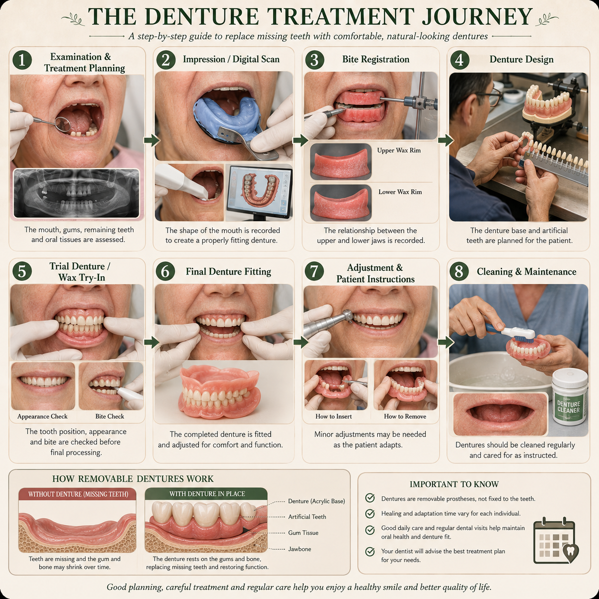

Missing teeth can affect chewing, speech and confidence. Dentures are one option for replacing missing teeth and restoring some of the functions of a natural smile.

Dentures are removable dental appliances designed to replace missing teeth. Depending on their design, they can replace several missing teeth or all of the teeth in an arch.
They are made to fit the mouth and can help restore functions such as chewing and speech while also supporting the appearance of the smile.
A good fit is important for comfort, function and the health of the tissues supporting the denture.
The appropriate type depends on the number of missing teeth, the condition of the remaining teeth and gums, bone support and the individual's overall oral health.
Designed to replace all of the teeth in an upper arch, lower arch or both arches.
Used when some natural teeth remain and additional teeth need to be replaced.
Supported by dental implants to provide additional stability in suitable cases.
Dentures may be considered when multiple teeth are missing or when some or all remaining teeth cannot be predictably maintained.
They can provide a removable way to replace missing teeth and may help improve chewing, speech and appearance.
Depending on the situation, alternatives may include dental bridges, implants or combinations of different treatments.
Getting dentures usually involves several stages. The exact process depends on the type of denture and your individual dental needs.
Your dentist examines your mouth, remaining teeth, gums and supporting tissues and discusses suitable tooth-replacement options.
Measurements, impressions or digital scans may be taken to help create a denture that fits your mouth.
Depending on the type of denture, trial stages may be used to assess fit, appearance, speech and the relationship between the jaws.
The completed denture is fitted and your dentist checks its comfort, stability and function.
Follow-up appointments may be needed to make adjustments and ensure the denture remains comfortable.
New dentures can feel unfamiliar at first. Some people notice temporary changes in speech, chewing or how the appliance feels in the mouth.
It can take time and practice to become comfortable with eating and speaking while wearing a new denture.
If a denture causes persistent soreness, slipping, difficulty chewing or other problems, it should be assessed by your dentist rather than simply tolerated.
Proper care helps keep dentures clean and supports the health of the mouth and any remaining natural teeth.
The gums and supporting tissues underneath a denture can change over time. As a result, a denture that was once comfortable may gradually become loose or less stable.
Your dentist may recommend an adjustment, repair, relining or replacement depending on the condition of the denture and the tissues underneath it.
Persistent rubbing, sores, instability or difficulty chewing should be discussed with your dentist.
Many people can eat a wide range of foods with dentures, although it may take time to adjust. Starting with softer foods and gradually increasing the variety can help during the adjustment period.
Dentures can help restore some speech function when teeth are missing, but new dentures may temporarily affect pronunciation while you become accustomed to them.
Yes. Changes in the gums and supporting tissues, wear of the denture or other factors can affect its fit over time. Your dentist can assess whether an adjustment or replacement is needed.
Dentures are designed to provide long-term tooth replacement, but they may need maintenance, adjustment, repair or replacement over time.
Neither option is automatically better for everyone. The most appropriate treatment depends on factors such as oral health, bone support, remaining teeth, general health, expectations and individual circumstances.
There is no single tooth-replacement option that is suitable for everyone. Your dentist will consider the number and position of missing teeth, the condition of the remaining teeth and gums, bone support, your bite and your overall oral health.
A proper examination is important before deciding whether dentures, bridges, implants or another treatment option is most appropriate.
Good treatment planning should also consider comfort, function, oral health and how the restoration can be maintained over time.
If you are considering tooth replacement or want to understand your options better, you can submit your dental question through the website.
Ask Dr. Anushka →The information on this page is for general educational purposes only and does not replace an in-person dental examination, diagnosis or personalised professional advice.